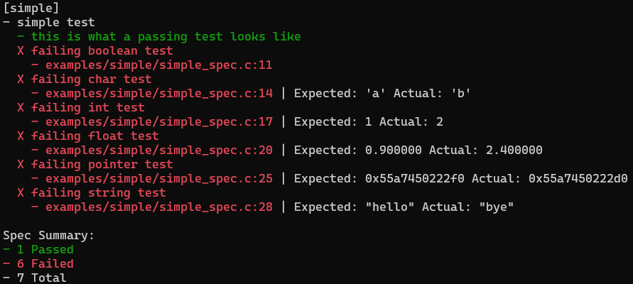

<html lang="en"></html><head><meta charset="UTF-8" /><meta content="IE=edge" http-equiv="X-UA-Compatible" /><meta content="width=device-width, initial-scale=1.0" name="viewport" /><link href="styles.css" rel="stylesheet" /><title>Greg Jensen</title></head><body><div class="center"><a href="https://gregjensen.dev">Home</a><a href="https://gregjensen.dev/math">Math</a><a href="mailto:greg.micah.jensen@gmail.com">Email</a><a href="https://blog.gregjensen.dev">Blog</a><a href="https://www.github.com/g-jensen">GitHub</a></div><div class="center"><h1>specc</h1></div><div class="center"><h4 class="subtitle">Unit testing framework for C/C++</h4></div><div class="center"><br /><div class="description"><ul><li>specc is a library of macros that allows for unit testing of both C and C++ code.</li><li>Find instructions for setup here: <a href="https://github.com/g-jensen/specc">repo link</a></li><br /><li>An example output:</li></ul></div></div></body>